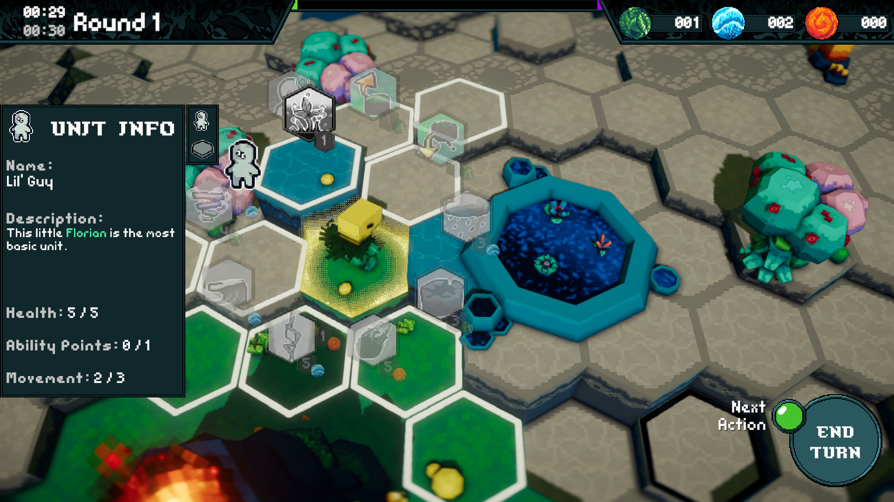
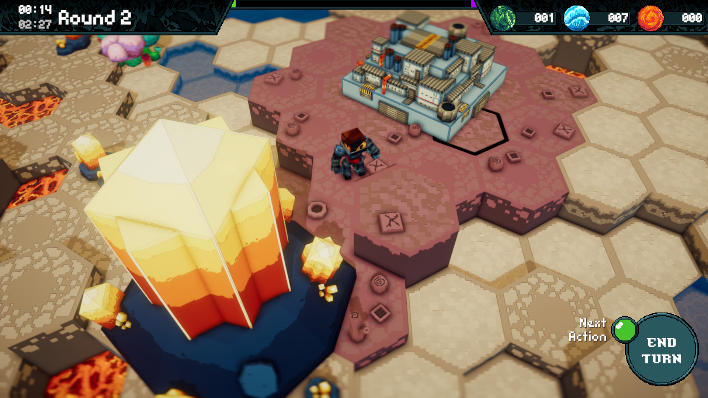
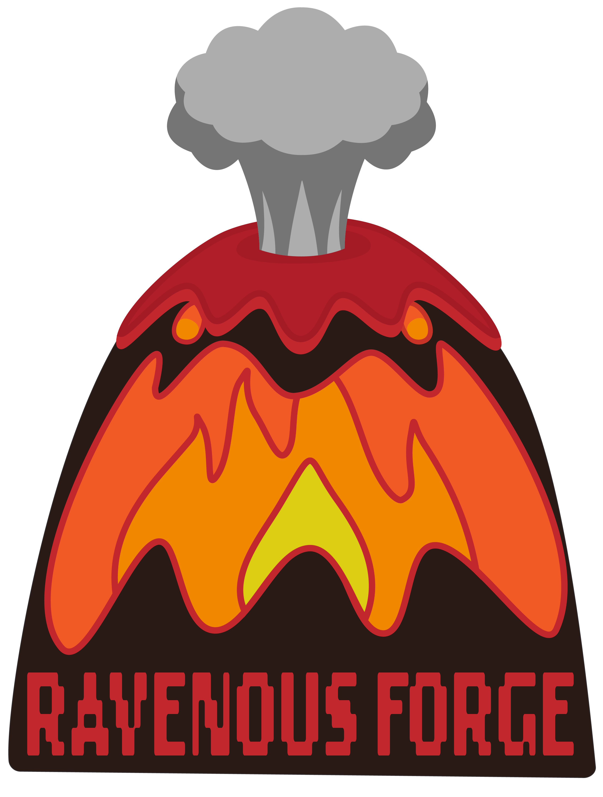

Terra Inferno
Factsheet
Developer: Ravenous ForgeRelease date: June 2024
Platforms: Windows & Mac
Website: https://ravenous-forge.github.io
Regular Price: FREE
Description
Humans have landed on Terra Inferno, spreading like a virus, bringing pollution and robbing the planet of its precious resources. But they have stirred you from your slumber and you are retaliating by bringing the environment to life and causing natural calamities! In this Turn-Based Tactics meets Resource Management game, spread wildfires across forests to incinerate your foes, conjure up rain storms to extinguish the flames, and move mountains to protect precious areas using the power of the world around you. Use the Florians and the planet to your advantage to destroy the Humans Mothership and save Terra Inferno!
Features
- Turn Based Tactics
- Resource Management
- Procedural Map Generation
Videos
Images
 
Logo & Icon
About Ravenous Forge
Ravenous Forge is a student-run studio created in 2024 to make our first project, Terra Inferno.
Terra Inferno Credits
Anamaria BalderasSound Design | Music | Marketing
Nick Capria
Tech Artist | Marketing
Binqi Lu
3D Artist
Ginger Mellott
UI Artist | Concept Artist
Grady Milligan
Developer
Douglas Ngo
Lead Producer
Sangheon 'Michael' Park
Sound Design | Music
Joshua Pelkington
Lead Developer
Chris Wiese
Lead Artist | Concept Art | UI Artist
Harrison Wladis
Co-Producer | Animator | Generalist